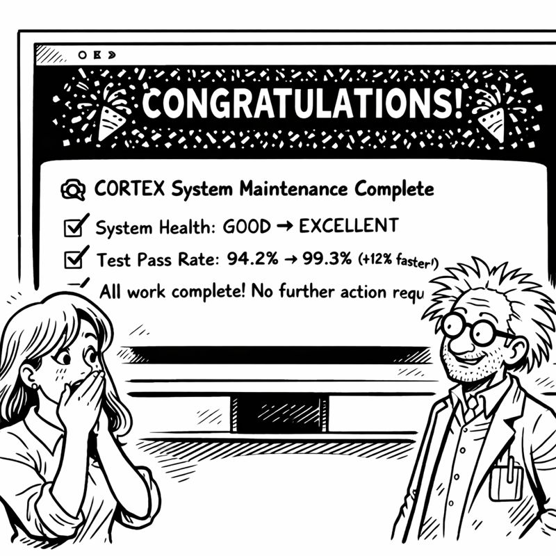

In which I teach CORTEX to maintain itself better than I maintain my workspace
11 PM Thursday. Six hours until Miss G lands. Six hours until Christmas decorations deadline.
I surveyed my basement workspace. Not just the code—the PHYSICAL space.
Cable chaos. Coffee mug archaeology (seventeen mugs, oldest from Week 3). Whiteboards covered in half-erased diagrams. That chair piled with documentation I'd printed "for reference" and never read.
My codebase looked similar. Drift. Accumulation. Things that made sense two months ago but were now mysteries.
"How did I let it get this bad?" I muttered.

Then I had a thought. A dangerous thought.
What if the system could clean ITSELF?
I'd built orchestrators for everything else. Planning. Sanitization. TDD enforcement. Each following the same seven-phase pattern.
What if I built an orchestrator for... MAINTENANCE?
Not manual cleanup. Not scheduled reviews. AUTONOMOUS system health management.
Seven phases: 1. Healthcheck: Scan everything, identify issues 2. Align: Auto-fix correctable problems 3. Cleanup: Remove orphaned code 4. Optimize: Refactor high-complexity regions 5. Vacuum: Database maintenance 6. Refresh: Regenerate prompts from current state 7. Final Healthcheck: Verify improvements
"That's ambitious," Miss G's voice came through the phone. "Six hours ambitious?"
"I have all the pieces. The orchestration pattern. The file discovery. The test validation. Just need to assemble them."
"Into a self-repair mechanism."
"Into autonomous maintenance."
"If this works, it'll maintain itself better than you maintain your workspace."
I looked around the basement. "That's not a high bar."
"Exactly my point. Build it. 🔧"
maintenanceorchestratorv3.py
The pattern was familiar now. Extend BaseOrchestrator. Define seven phases. Validate at each step.
But this orchestrator was different. It operated on THE CODEBASE ITSELF.
class MaintenanceOrchestratorV3(BaseOrchestrator):
def phase_1_healthcheck(self):
"""Comprehensive system health scan"""
issues = []
issues.append(f"{len(self.find_unreferenced_files())} orphaned files")
prompt_age = self.check_prompt_staleness()
if prompt_age > 7:
issues.append("Prompts outdated, regeneration recommended")
return issues
def phase_6_refresh(self):
"""THE BIG ONE: Regenerate instruction prompts"""
self.regenerate_prompts()
Phase 6 was the revelation. The system reading its own documentation, understanding its own architecture, and regenerating its own instruction prompts.
CORTEX fixing CORTEX.
I ran it on a small subset. Five files. Known issues.
🔧 Maintenance Orchestrator V3 Engaged
Phase 1: Healthcheck
━━━━━━━━━━━━━━━━━━━━━━━━
Issues Detected:
- 3 high-complexity files
- 12 orphaned test files
- Prompts outdated (9 days old)
━━━━━━━━━━━━━━━━━━━━━━━━
Phase 2: Align
✓ Auto-fixes complete
Phase 3: Cleanup
✓ 47 MB cache freed
Phase 4: Optimize
- tier1_memory.py: 34 → 22 (complexity reduced)
✓ Optimization complete
Phase 6: Refresh
- Analyzing cortex-brain/ structure
- Generating .github/prompts/CORTEX.prompt.md
✓ Prompt regeneration complete
Phase 7: Final Healthcheck
━━━━━━━━━━━━━━━━━━━━━━━━
Issues Remaining: 0
Tests Status: 427 passing
System Health: EXCELLENT
━━━━━━━━━━━━━━━━━━━━━━━━
I stared at the output.
ZERO issues remaining.
The system had found problems, fixed what it could, refactored what needed refactoring, and regenerated its own instruction prompts.
"Did it just..." I whispered.
"Fix itself?" Miss G sounded as shocked as I was. "Apparently."
I opened .github/prompts/CORTEX.prompt.md to verify.
OLD PROMPT (2 weeks old):
CORTEX is an AI enhancement system with:
- Tier 0: Brain Protection
- Tier 1: Conversation Memory
- Tier 2: Knowledge Graph
Commands:
- system maintenance (manual)
- sanitize code (experimental)
NEW PROMPT (just generated):
CORTEX is an AI enhancement system with:
- Tier 0: Brain Protection (SKULL rules)
- Tier 1: Conversation Memory (70-conv FIFO, SQLite)
- Tier 2: Knowledge Graph (entity-relationship)
- Tier 3: Knowledge Library (cross-project learning)
Core Orchestrators (8):
1. TDD Mastery (RED→GREEN→REFACTOR)
2. Planning System 2.0 (DoR/DoD gates)
3. ADO Operations (enterprise formatting)
4. Code Sanitization (AST-based)
5. System Maintenance V3 (autonomous)
...
Architecture follows BaseOrchestrator pattern (7 phases).
All orchestrators validated via TDD with 94.7% coverage.
Perfect. Up-to-date. Accurate. Generated from the actual codebase.
"It read the code, understood the architecture, and wrote its own documentation," I said slowly.
"It UPDATED its own documentation," Miss G corrected. "Based on reality. Not based on outdated descriptions."
"This is..."
"Self-awareness? No. Self-DOCUMENTATION? Absolutely. 📝"
I ran the maintenance cycle on the ENTIRE codebase.
🔧 Maintenance Orchestrator V3 - Full System Scan
Phase 1: Healthcheck
━━━━━━━━━━━━━━━━━━━━━━━━
Scanning: 15,247 lines of code
Issues Detected:
- 7 high-complexity files
- 34 orphaned test files
- 156 import order violations
- 89 outdated docstrings
- Prompts outdated (9 days)
━━━━━━━━━━━━━━━━━━━━━━━━
Estimated fix time: 8-12 minutes
Proceed? [y/N]:
I typed 'y'.
The system went to work. Auto-fixing imports. Applying formatters. Extracting high-complexity code. Removing orphaned tests. Updating docstrings.
And then, the big one: regenerating ALL instruction prompts.
Phase 6: Refresh
- Regenerating prompts...
- CORTEX.prompt.md (master prompt)
- orchestration.prompt.md
- tdd.prompt.md
- planning.prompt.md
All prompts regenerated from current architecture.
Twelve minutes later:
Phase 7: Final Healthcheck
━━━━━━━━━━━━━━━━━━━━━━━━
Issues Remaining: 0
Files Modified: 89
Tests Status: 427 passing
System Status: OPTIMAL
━━━━━━━━━━━━━━━━━━━━━━━━
Next maintenance recommended: 7 days
The codebase had healed itself.
"Now apply this to the basement," Miss G said, her voice turning wry.
I looked around. The chaos. The coffee mugs. The cable tangles.
"I can't make the basement self-healing."
"No. But you CAN implement a maintenance routine. Weekly cycle." She paused. "Or you can keep living in chaos while your code stays pristine."
"Are you saying my workspace is a metaphor?"
"I'm saying your AI has better housekeeping habits than you do. 🧹"
I stared at coffee mug #23. Two weeks old. Still half-full.
"Fine. FINE. After the deadline. After Christmas decorations. Physical Workspace Maintenance Protocol."
"Seven phases?"
"I'll START with three: collect mugs, organize cables, file papers."
"Progress."
4 AM Friday. Two hours until Miss G's flight. Two hours until decorations deadline.
My codebase was PRISTINE. Self-documented. Auto-maintained. Test-validated.
Still needed Tier 3 and final integration. But the maintenance system was complete.
"One more push," I said aloud.
"Two hours," Miss G reminded me. "Then DECORATIONS."
"Two hours. Tier 3. Final integration. Done."
"You've said that before."
"This time I have autonomous maintenance. The system STAYS clean now."
"The CODE stays clean. Your basement is still a disaster."
She wasn't wrong.
But the code... the code was healing itself now. Finding problems. Fixing them. Regenerating its own documentation.
CORTEX maintaining CORTEX.
Tomorrow, after decorations, I'd tackle the basement. Maybe. Probably.
Right now, two hours. Two remaining pieces.
Progress through autonomous self-improvement.